What is OpenSCAD and why should I use it?
OpenSCAD is a free software tool for creating solid 3D CAD models. The CAD models are produced using a script which is coded in a language similar to C and is compiled to render a 3D model from this script file. This means that the models are easily reproduced, distributed, and altered.
The 3d model can then be exported in a number of ways. It can be exported in such a way as to create a mesh for a CFD simulation or can be exported such that the design can be 3d printed. An example of the former can be seen below in form of 3D printed speaker vessels.
So, why shoud you use OpenSCAD as opposed to regular CAD software?
- The Pros of OpenSCAD are:
- precise placement of object (as all objects have explicit numbered coordinates and sizes)
- easily modifiable design, e.g. when you want to make a wall thicker or a hole larger, and the whole design adapts to the new numbers automatically.
- a text-readable design, and easily recyclable components or behaviors
However if you are attempting to create an organic looking object where the precise sizes and dimensions don't matter OpenSCAD may not be the right tool for the job. Creating complex curving organic shapes using simple primative shapes can take quite a long time and would probably be easier in typical CAD software.
OpenSCAD as a functional programming language
The concept of OpenSCAD is based on a functional programming language. One of the most apparent differences to imperative programming languages like C is the fact that variables are assigned at compile time, not at run time. In this sense they are somewhat similar to constants in other languages.
While iterative formulations are not supported in any way, recursive functions can be defined. Since version 2015.3 OpenSCAD also includes list comprehension, which allows for very elegant formulations of a given problem.
Variables and data types
The most important data types are
- Numbers: a = 2.3
- Boolean: true, false
- Strings: s = "hello world"
- Ranges: r = [0:2.5:20]
- Vectors: vec = [1, 2, "somestring", [3.5, 7]]
As the vector example already suggests, matrices can be easily defined as vectors of vectors. The range is a very important data type, as iterative programming is not feasible.
New OpenSCAD users have to get used to the idea that expressions like x = x + 1 are not allowed. They will also have to understand that, even if a variable can be assigned at various positions of the code, every variable call will use only the last assigned value.
The following lines of code
- a = 1;
- echo(a);
- a = 2;
- echo(a);
will consequently produce this output:
In addition to the normal data types, there are also special variables used to control the rendering of objects. Some of the most important examples are
- $fn, $fs, $fa: these variables control the number of facets
- $t: time, which is needed for animations
Conditional and Iterator Functions
OpenSCAD uses concepts very similar to other programming languages, most notably for loops and if statements.
Compared to imperative languages, for loops are different in the sense that the loop does not go through the increments of a variable, but through the elements of a range or a vector. This is why range is an important data type.
The beauty of this can be seen when going through a vector of vectors, to name but one application.
A nice demonstration of the power of for loops in OpenSCAD is the way a matrix can be flattened into a vector. Let's assume we are working with the matrix
mat = [[1, 2], [3, 4]];
Then the expression for (i=mat) for (j=i) goes through the vectors [1, 2] and [3, 4] first and then through the elements 1, 2, 3 and 4.
With the integration of list comprehension in version 2015.3, this idea can be brought to the next level:
flattenedvector = [for (i=mat) for (j=i) j];
If statements work very similar to other languages. It can also be very useful to use the conditional ?, which uses a structure similar to the following expression:
a = test ? TrueValue : FalseValue ;
So here the variable a is assigned depending on the boolean value test.
Operators and Mathematical Functions
Operators in OpenSCAD are similar to C/C++, although increments and decrements are not supported due to the non-iterative nature of OpenSCAD.
Mathematical operators can easily be applied to vectors and matrices. There is also a cross product function cross as well as a broad range of mathematical functions which mostly operate on scalars.
Vectors of uniformly distributed random numbers can be produced using the rands function.
Functions, Modules and Libraries
Larger programs can be written making use of functions, modules and libraries.
Functions are definitions which return a value, for instance function func0(x = 3) = 2 ∗ x + 1;. They can be defined recursively, as in function sumv(v,i,s = 0) = (i == s ? v[i] : v[i]+sumv(v,i −1,s));.
Modules perform actions, but do not return values. They can be used to reuse combinations of objects, as in module myshape(r, d) {union(){sphere(r); cube(d); }}.
Library files can be executed (i.e. all the commands in the file will be performed) using the structure include < filename.scad >. If only the modules and functions of the library shall be imported, the command to use is use < filename.scad >.
Documentation
The OpenSCAD website provides an extensive and easy to understand documentation. To get a quick overview, a cheat sheet is provided, which includes direct links to the documentation for the most important commands.
Getting Started with OpenSCAD
Click here to open the OpenSCAD CheatSheet. This is a good reference to have when getting started with OpenSCAD as it shows you all the commands and links directly to the OpenSCAD documentation.
Some Basic Shapes
The first primative shape we will look at is the cube.
To define a simple cube with sides of length 10mm in OpenSCAD you simply write the following:
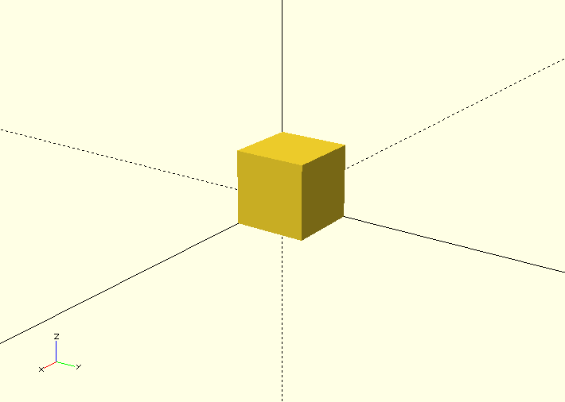
You could also write the following to get the same result:
To create a cuboid with sides of different lengths you could type the following (Dimensions are defined in x, y and z format):
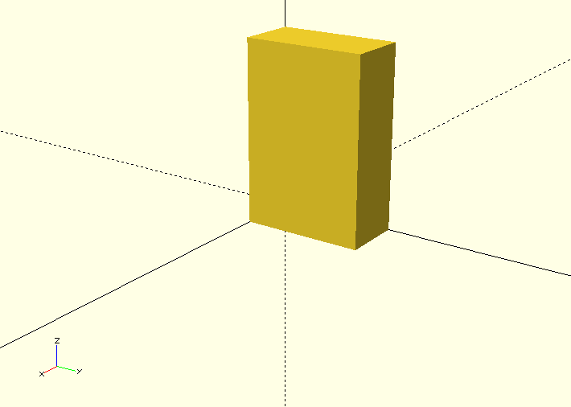
These cubes are rendered with thier corner on the origin if you wish to have them centred on the origin simply use set argument center to true like so:
cube([10, 20, 30], center=true);
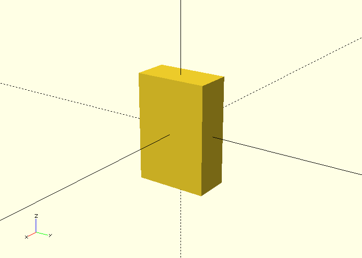
The next primative shape we will look at is the sphere. A sphere is automatically centered on the origin by default.
To create a sphere with radius 10mm you can do the following:
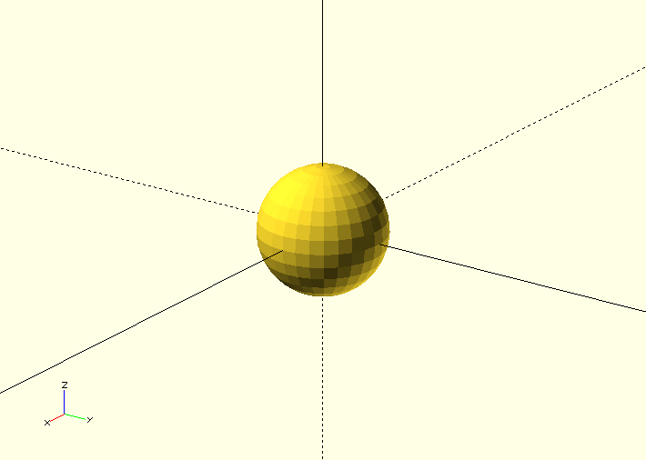
You can also use arugments to specify the sizes of shapes, for example you can create a sphere by setting the radius using the argument r or a diameter by specifying the arugment d. The following codes creates the same sphere as above.
sphere(r=10);
sphere(d=20);
It is often a good idea to use the arguments to specify the measurements of shapes since it is more obvious what measurement you are specifying, e.g. diameter or radius.
The last primative shape we will look at is the cylinder. By default A cylinder has it's axis centered about the z axis but has it's base at z=0.
You can define a cylinder with height 20mm and radius 10mm like so:
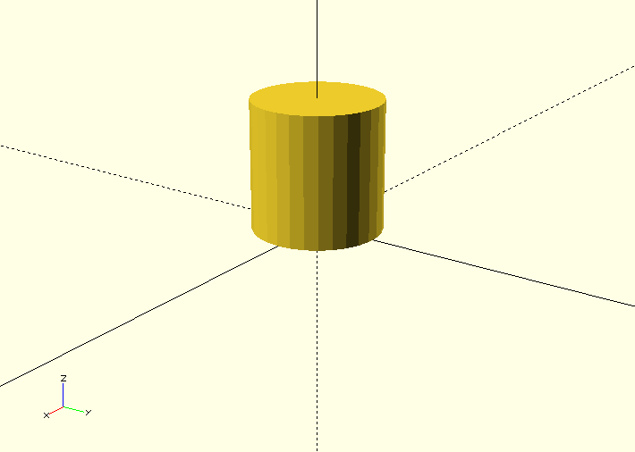
You can also create cones using this cylinder shape by specifying the arguments r1 and r2, see below:
cylinder(h=20, r1=10, r2=5);
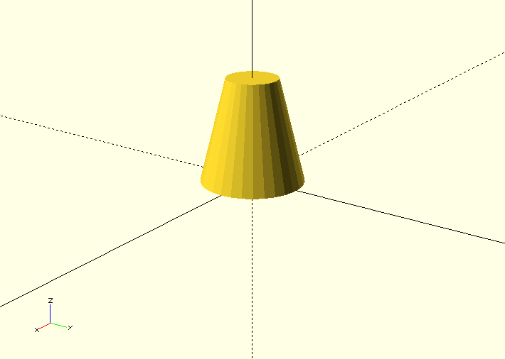
Making Smooth Objects
You can specify the number of facets on a shape to smooth out shapes or to make different shapes.
For example a cylinder with 3 faces produces a triangular prism, see below. The number of facets on a shape is specified with the argument $fn.
cylinder(r=5, h=20, $fn=3);
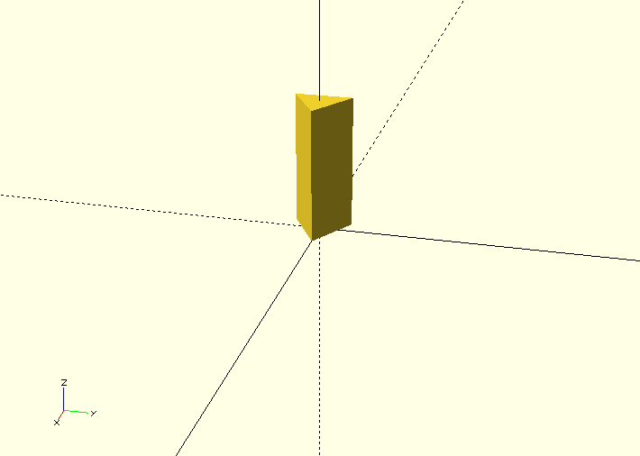
By using 4 faces you get a cuboid, 5 and you get a pentagonal prism and so on.
By using a very large number you get a shape which is closer to a real cylinder, however you should not attempt to use this to increase the resolution/smoothness of your object instead you should use the paramters/arguments defining the "minimum angle", $fa, and the "minimum size", $fs. These set the minumum angular size for a face and the minumum size of a side of that face. These can be set as a default value for the entire script or can be specified as an argument for a particular shape. See below for how to do this:
You can set default values for $fa and $fs like so:
.. code-block:: c
$fs = 0.5;
$fa = 0.5;
cylinder(r=5, h=20);
Or you can set them as a argument like this:
cylinder(r=5, h=20, $fs=0.5, $fa=0.5);
These will produce the following shape
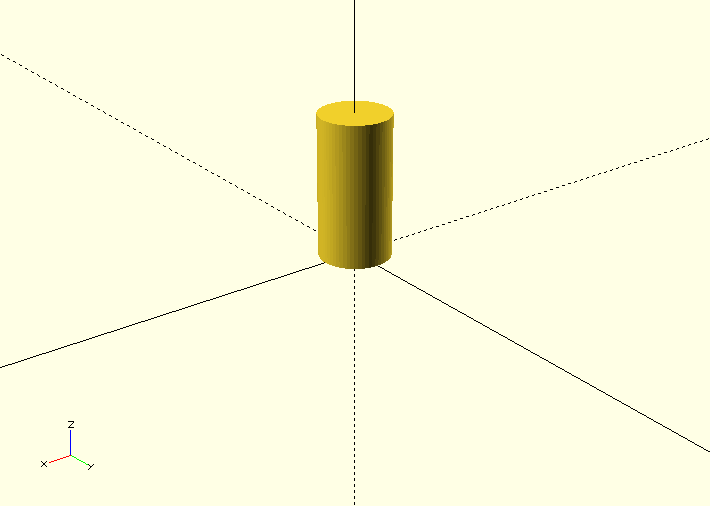
It is a good idea to set a particular default for your design based on what your object recuires, e.g. if you are 3D printing the object there will be a minimum size that the 3D printer can print. If you are using the object in a simulation you may need a certain resolution/smoothness of the shape to get a realistic output from your simulation. If you are not sure what is required setting values for both as 0.5, as shown above, provides a reasonable level of smoothness without slowing down the rendering of the object too much. A smoother shape with more sides will take significantly longer to render and manipulate.
Geometric Transformations
The first geometric transformation we will cover is translation.
Translations of objects are done by preceding the object definition with the command translation followed by a vector, see the example of a cube translated 10mm in the x axis below:
translate([10, 0, 0]) cube(10);
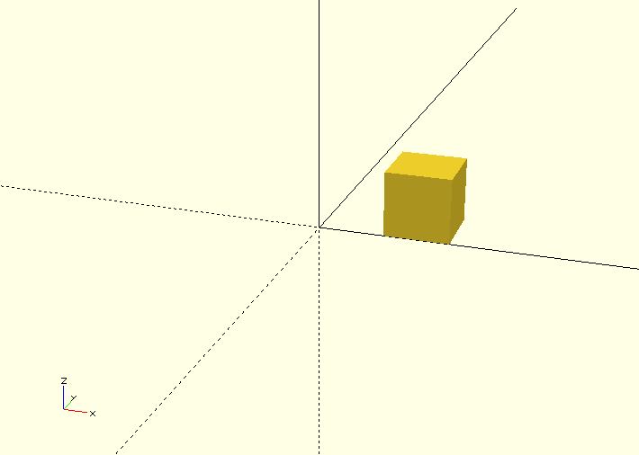
By setting the object to be centred and translating the object by a vector [x, y, z] the object can easily be centred around a generic vector postion [x, y ,z], see the example below of a cylinder centred on [x, y, z]:
translate([x, y, z]) cylinder(h=20, r=10, center=true);
You can also define the vector seperately and translate by that vector like so:
V = [x, y, z];
translate(V) cylinder(h=20, r=10, center=true);
The next geometric transformation we will cover is rotation. Rotations are performed about the x, y and z axis.
For example to rotate a cylinder thetaX about the x axis you perform the following operation:
rotate([thetaX, 0, 0]) cylinder(h=20, r=10, center=true);
It is recommended to perform rotation about 1 axis at a time so that the operation is easy to understand. This is because after 1 rotation the next rotation performed depends upon the first. See the example below:
This first code performs 2 rotations at once, one about the x axis, one about the y axis.
rotate([90, 90, 0]) cylinder(h=20, r=10, center=true);
This produces the following rendered object:
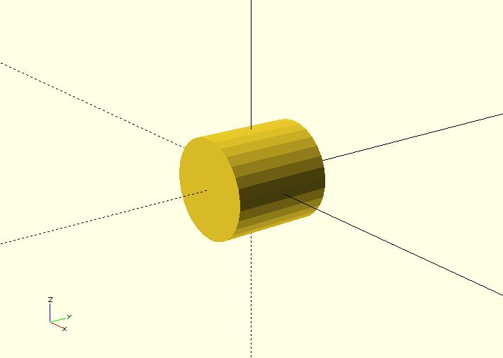
By performing the 2 rotations seperately a completely different rotation is observed. This is typically easier to visualise.
rotate([90, 0, 0]) rotate([0, 90, 0]) cylinder(h=20, r=10, center=true);
This produces the following rendered object:
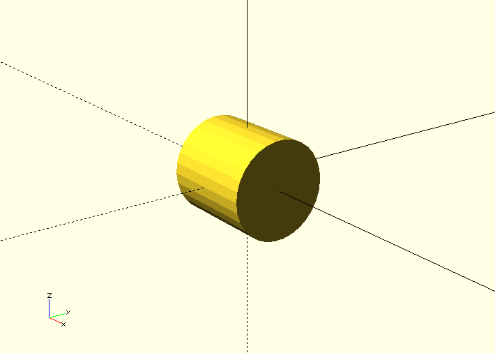
Operations
There are 3 primary operations in OpenSCAD, union, difference and intersection.
Union is what OpenSCAD does by default if you construct multiple objects, it 'adds' the objects such that they build up a more complex object. 3 example of unions of 2 objects are shown below:
cylinder(r=5, h=20, center=true);
sphere(r=7);
{
cylinder(r=5, h=20, center=true);
sphere(r=7);
}
union()
{
cylinder(r=5, h=20, center=true);
sphere(r=7);
}
All 3 of these render the following object:
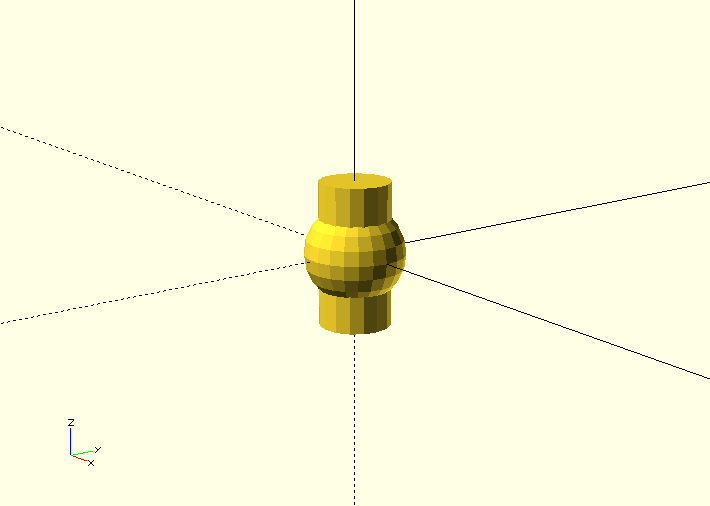
Difference is the next operation that you can use in OpenSCAD, this takes the subsequent objects away from the first object. See the example below with the same component parts.
difference()
{
cylinder(r=5, h=20, center=true);
sphere(r=7);
}
This will render the following object:
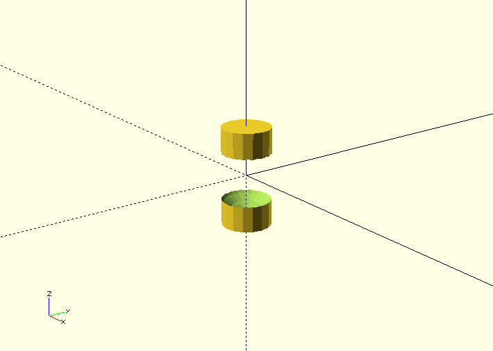
Finally there is intersection which renders the volume in which all the objects stated inside the intersection block intersect with each other. See the intersection example below with the same component parts as the previous 2 operations.
intersection()
{
cylinder(r=5, h=20, center=true);
sphere(r=7);
}
This will render the following object:
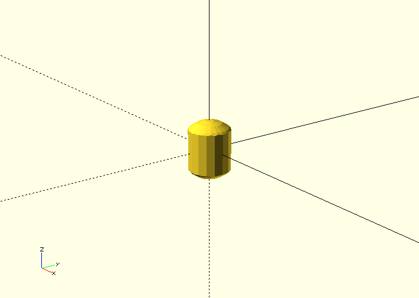
A common gotcha with OpenSCAD - Zero Thickness Surfaces
A common problem experienced when using OpenSCAD to design an object for simulation or fabrication is zero thickness surfaces, literally surfaces defined in the design which have a thinkness of zero and so are completely unphysical. This typically happens when using the difference operation to make a hole in an object. If you define a cylinder to make a hole in an object and the edge of that cylinder lies in the edge of the object you are differencing it from you will render a surface with 0 thickness, this can be seen in the example below when attemping to make a tube:
difference(){
cylinder(r=5, h=20);
cylinder(r=4, h=20);
}
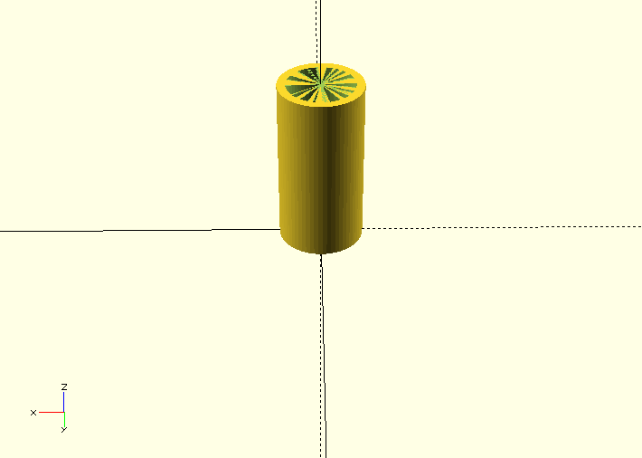
You can see there appears to be a thin surface over the top of the tube. To solve this you may try to make the inner cylinder longer, which is partially the correct solution, see below:
difference(){
cylinder(r=5, h=20);
cylinder(r=4, h=22);
}
The top of the tube now looks fine:
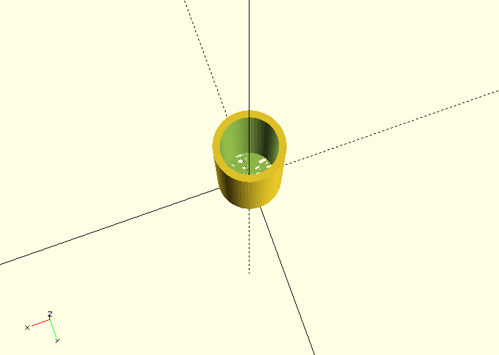
However the bottom still has this thin surface over it, since the bottoms of the tubes line up, by translating the tube slightly we can fix this and get a tube. See below:
difference(){
cylinder(r=5, h=20);
translate([0,0,-1]) cylinder(r=4, h=22);
}
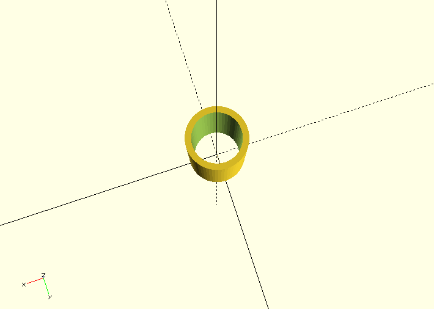
For More see the Documentation
Using these 3 primative shapes, along with the 2 geometric transformations and the 3 operations is enough to create some quite complex shapes already but the toolkit supplied by the OpenSCAD software contains much more useful functionality, see the documentation for the complete functionality of openSCAD.
Libraries for OpenSCAD
One of the huge advantages of OpenSCAD is the fact that many libraries are available, some of them with very specific definitions, which allow for professional results.
The central project supported by OpenSCAD is the MCAD library. It offers a large variety of modules and functions like
- Common shapes: rounded boxes, polygons, polyeders etc.
- Gear generator
- Nuts, bolts, bearings, screws
- Material definitions for common materials
- Mathematical constants and curves
BOLTS (BOLTS is an Open Library of Technical Specifications) is an open-source standard parts library that provides definitions of standard parts. Some examples are
- C-Beam profiles
- Bearings
- Nuts
- Batteries
- Washers
- Pipes
Definitions of the most important standardisation bodies like ISO, EN, ANSI, DIN, IEC etc. are supported.
For code development itself there are also helpful libraries available. A good example is Test Card, which provides functions for unit testing. Some typical test include
- Equality / Non-equality
- Truthiness / Falseness
- Presence / Absence
Advanced Usage of OpenSCAD
Instead of using the graphical user interface, external text editors can be used to create .scad files. For various of the most common text editors like emacs, vim or atom, extensions with OpenSCAD features are available.
OpenSCAD files can also easily be called from the command line, thus allowing for many options specifying input and output. As variables can be assigned from the command line using the -D var=val option, which can be used repeatedly, automisation within a shell script is easy to achieve, which is a very attractive feature in combination with other software.
If specific files are required within a more complex process, a make file can be provided for creating the missing files (like STL files for example).

 read more
read more